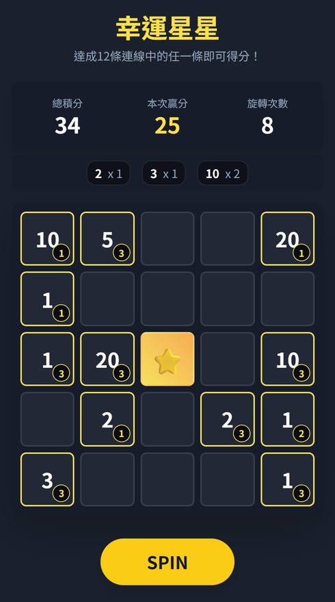

本職：遊戲數學 ｜ 深挖
這款的規則讓前後兩轉互相牽動，錄好的盤面用不上。我寫了一套「先決定這一轉付多少、再反過來生成盤面」的演算法：實際分數絕不超過目標，包成 SDK 交給伺服器。專案最後沒有上線，但它卡住的地方，正是我後來自己寫派彩決策伺服器的原因。
那段時間新遊戲提案不容易過。PM 提的這款，玩法參考一款已經做出來的競品：5×5 的盤面，中心固定一顆星星當萬用符號，12 條連線（5 橫、5 直、2 斜）。每一轉會有新的獎項符號掉進空格，符號填進去之後會留在盤面上三轉，三轉內陸續連成線就得分。
這個「留三轉」就是問題所在：每一轉開始的盤面，都是前幾轉留下來的。前後兩轉不是獨立事件，而是互相牽動。

規則展示頁（前端原型，結果為隨機，不是引擎產生的）。每個數字右下角的小圈是「還會留幾轉」，中心是固定的星星。
從盤面上看得很清楚：這一轉會不會連線、連出多少分，取決於盤面上已經有什麼、它們還能留幾轉。
我入職第一個月寫過一份 Slot 製作方案，比較了四種做法。其中方案三「錄製抽盤」是我比較推的：離線先把大量完整的遊戲結果錄下來分進容器，線上只依權重表抽一筆出來播放。前一個專案 SlotBingo 就是這樣做的，47 個容器就能涵蓋所有情況。
錄盤能成立，有一個前提：每一轉互相獨立，任何一筆錄好的結果都能拿來當任何一轉。BingoSlot 剛好打破這個前提。
所以這款只剩方案二：用演算法依當下的盤面即時生成。這條路的代價，我在入職時那份方案書裡就寫過：
| 方案三：錄製抽盤 | 方案二：演算法生成 | |
|---|---|---|
| 前提 | 每一轉互相獨立 | 不需要，可以接著上一轉的盤面算 |
| 調體感 | 改權重表，幾分鐘 | 改參數要重跑演算法驗證；方向大改就要重寫演算法 |
| 伺服器 | 只做抽樣，不算牌 | 要改伺服器流程、呼叫演算法 |
| 誰看得懂 | 權重表人人看得懂 | 非技術人員難以理解，技術人員也不直觀 |
| 複用 | 架構可以直接給下一款 | 概念能傳承，實作要針對新遊戲重寫 |
玩法是參考一款已經做出來的競品。既然市面上有人做出來了，技術上就成立——這是當時的共識。而在玩法照著競品走的前提下，很難提「改規則讓每一轉獨立、改用錄盤」這類替代方案：原創的玩法才有這個空間。
所以我能做的是把代價先講清楚：為什麼只能走演算法、這條路貴在哪裡（上面那張表），然後把它做出來。
一般老虎機是「先隨機轉出盤面，再算這盤得幾分」，分數事後才知道。這款反過來：先依權重表抽出這一轉要付的分數（目標分數），再由演算法建構一個總分剛好等於目標的盤面，而且要在上一轉留下的格子不能動的限制下解題。最高原則只有一條：湊不準可以少給，絕不能多給。
因為最高原則是「只會少、不會多」，長期下來實際回報一定比設定的略低。這個差距可以量：跑大量模擬抓出平均少多少，設定理論回報時先加回去。規格書裡用射箭比喻：箭一定往下掉，瞄的時候就稍微瞄高一點。
這套演算法原本的設計，是接在水位系統後面：水位系統決定這一轉該付多少，演算法負責把盤面生出來。演算法偶爾少給的那一點分數，會留在水位裡，之後再回補給玩家，所以「少給」不會真的變成玩家的損失。
問題是水位系統當時還在開發，時程開得很長。為了不等它，GM 希望先用權重表直接出分。這樣一來，演算法少給的分數就沒有地方回補了——再怎麼湊，總會有湊不滿的時候。
於是後面的版本做了一次明確的取捨：把湊分的精準度大幅提高、效能也略微提升，代價是二級玩法（BG）的盤面隨機性略為降低。隨機性、安全性、精準度三件事，安全性不能讓，只能在另外兩件之間挪；這次挪的方向，是讓分數盡量貼近目標，少一點的隨機感換回玩家實際拿到的回報。這個取捨我寫進了發布頁，讓 PM 知道換了什麼。
結果：沒有上線。伺服器端還沒開始接 SDK，專案就停了；我的理解是整體時程拉得太長。
第一，原則沒有變。演算法生盤面還是我最後才會動用的做法。這次用了，是因為規則讓前後兩轉互相牽動，錄盤的前提不成立；而且為什麼非用不可、要付出什麼代價，事先都寫在方案書裡。
第二，錄盤與演算法是同一套架構的兩種盤面來源。水位決定付多少，盤面交給誰生：每一轉獨立就用錄盤（後來派彩決策伺服器接第二款遊戲，就是這樣做的），前後相關才用演算法。這兩種都做過，所以我知道每一種的前提和成本在哪。
第三，這個專案真正卡住的地方不在演算法，在水位系統。水位系統的時程讓整條線停在原地，這是我後來決定自己寫派彩決策伺服器、直接交給 RD 的原因：與其等，不如先把可以照著做的參照實作交出去。
相關：遊戲總覽（BingoSlot、SlotBingo 卡片） ｜ 本頁數字、內部決策細節只在面試用的完整版。